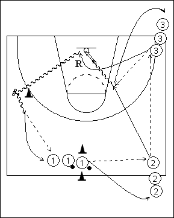

Déroulement
- Trois files. Les ballons se trouvent dans la file centrale.
- 1 passe à 2; 2 transmet à 3 qui lui remet pour un lay-up.
- 1 va en 2 et 2 en 3. Rebond de 3, qui passe derrière le cône, y effectue un changement de direction, passe au dernier joueur de la file 1 et rejoint cette file.
Coaching points
- On peut varier le type de passe (chest / bounce, etc …)
- Insister sur la rapidité du rebond de 3, sur sa vitesse de démarrage après ce rebond, sur sa bonne passe dans le dribble, juste après son changement de direction derrière le cône.
- On peut ensuite demander un jump shoot au lieu d’un lay-up.